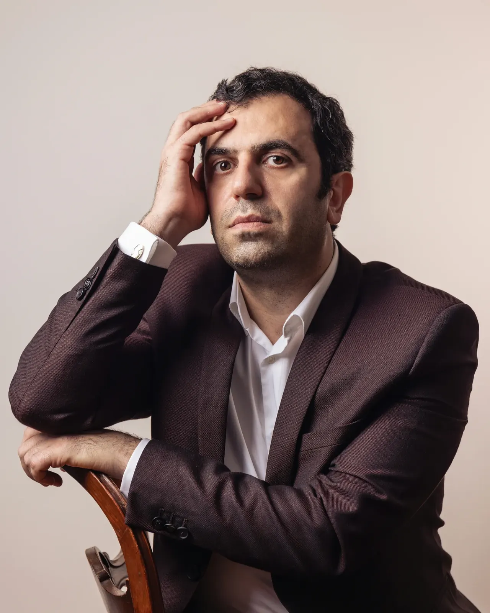
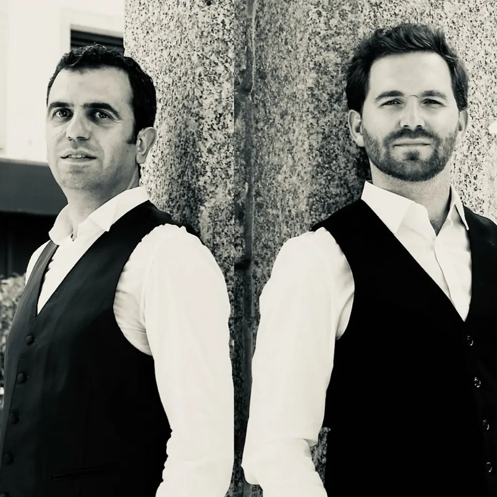
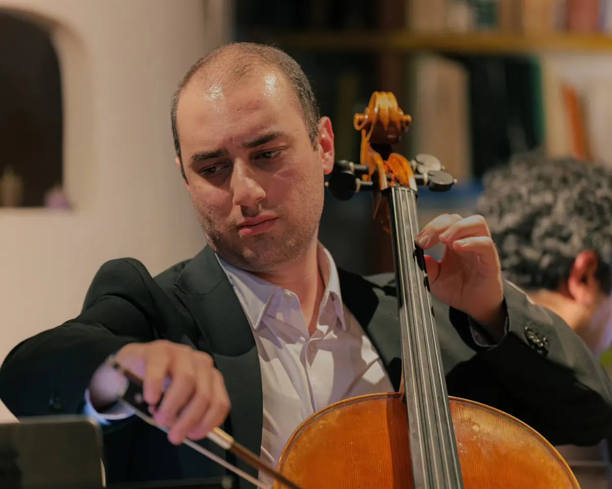
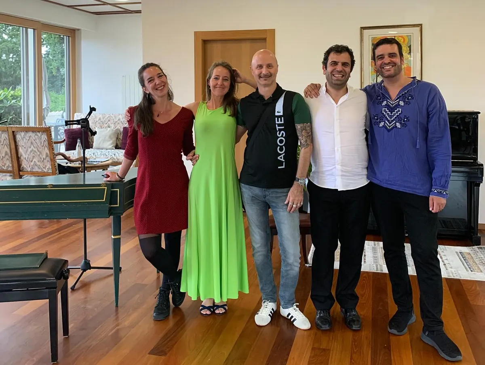
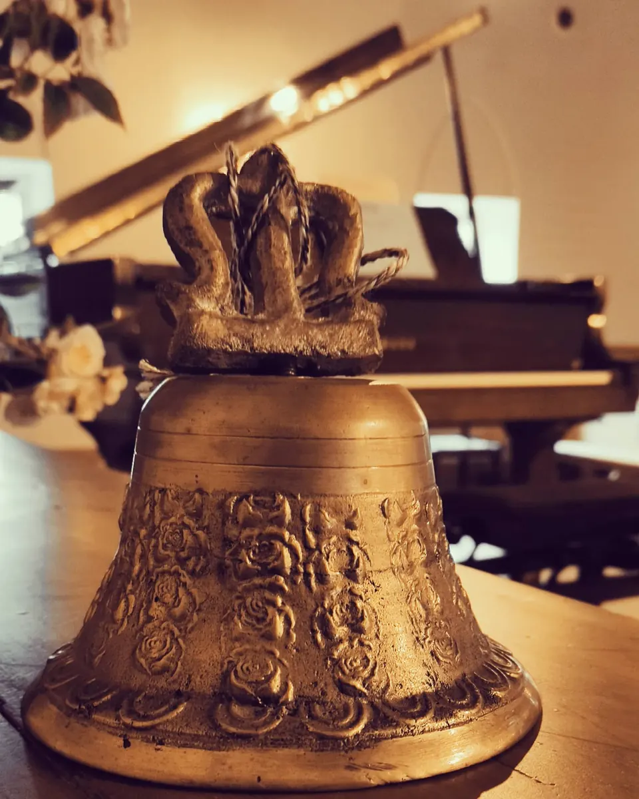
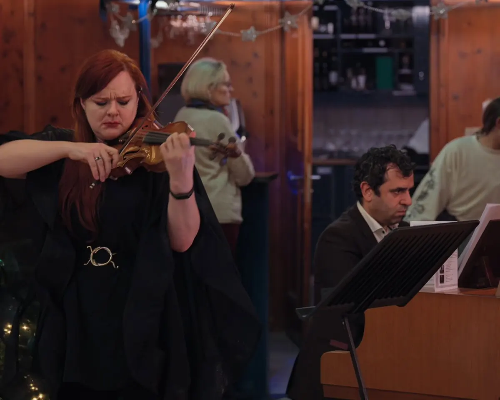
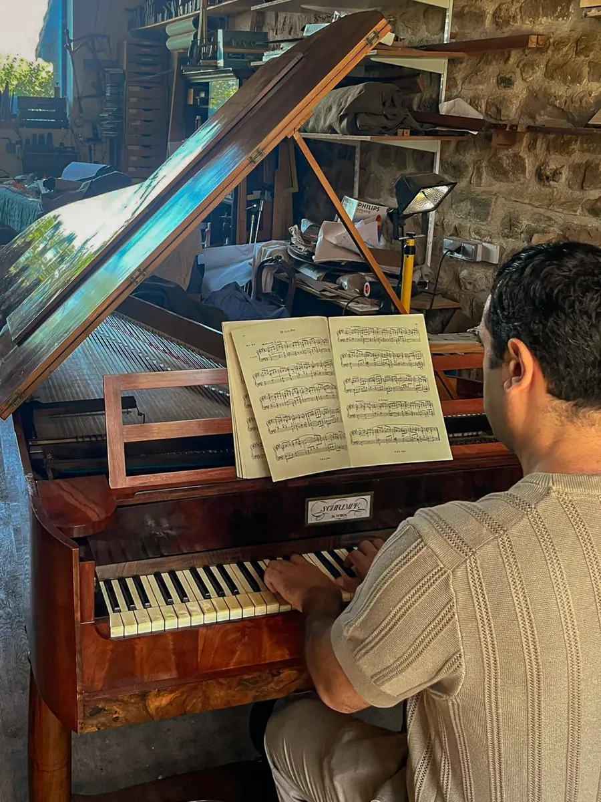
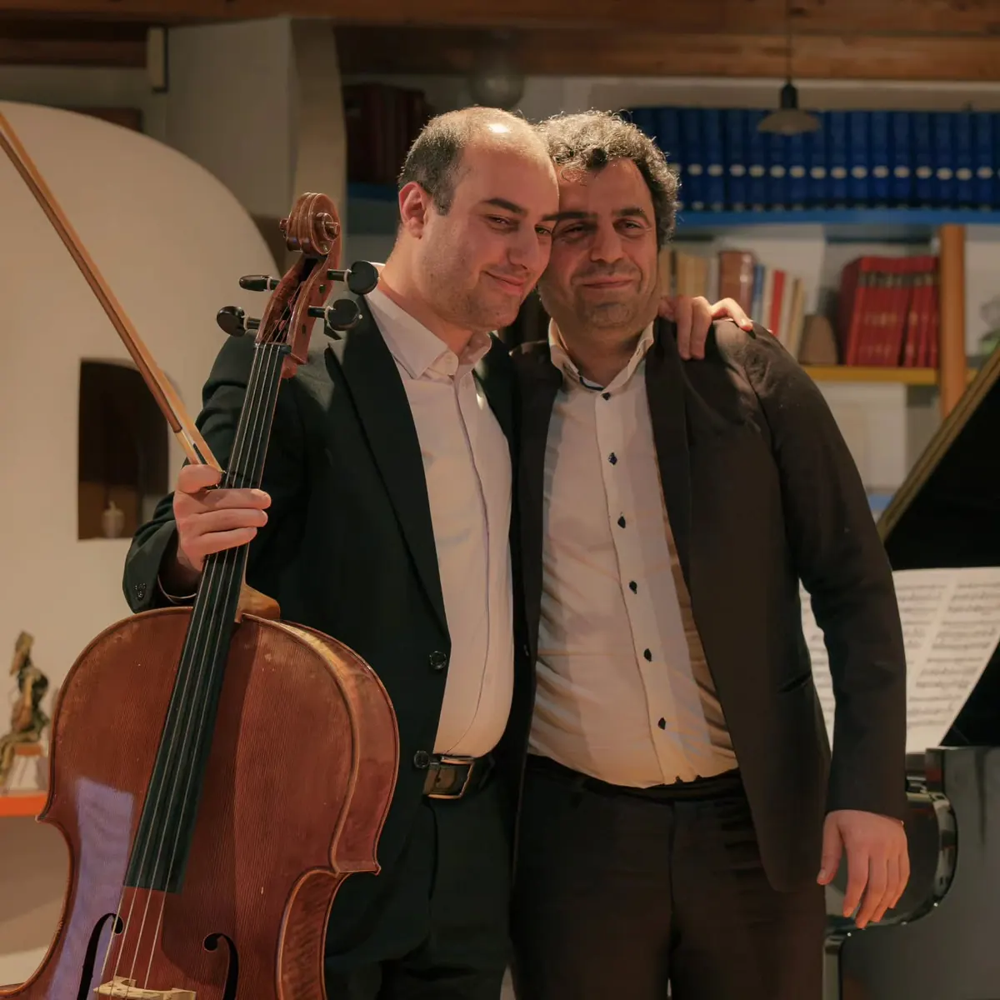
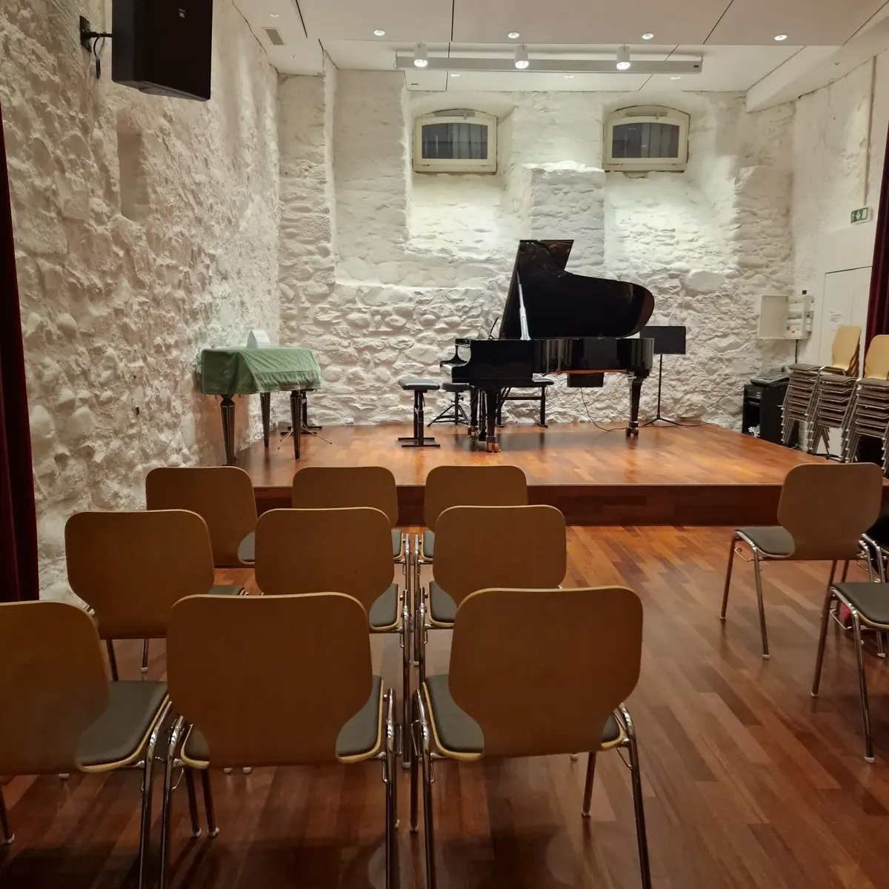
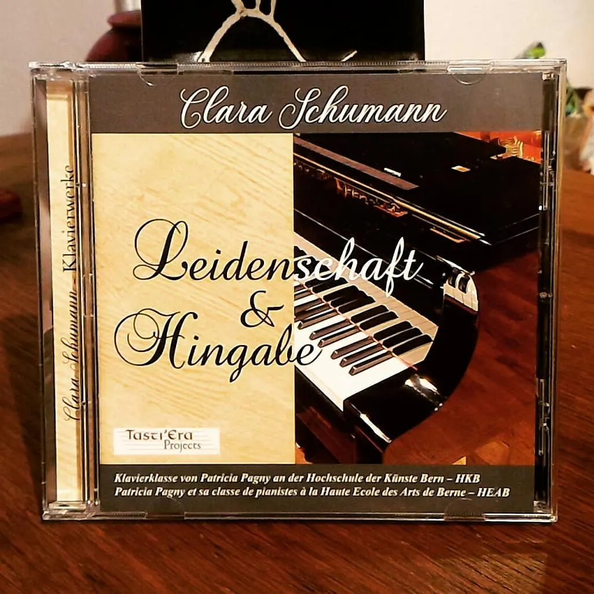

11vendredi, 20 h

Arman Grigorian, pianiste
Saison 2026–2027
- 11déc.Cloches : harmonies célestes exempleRécital, Temple de Lutry
- 24janv.Carnets lyriques exempleAvec Narek Hekekyan, Vevey
- 20févr.Liszt et Pétrarque exempleAvec Tristan Blanchet, Lausanne
Concerts
5 concerts cette saison, de Lutry à Sion exemple
Décembre 2026
Janvier 2027
24dimanche, 17 h
Carnets lyriques exemple
Février 2027
20samedi, 19 h 30
Liszt et Pétrarque exemple
Mars 2027
21dimanche, 17 h
Un voyage baroque exemple
Mai 2027
8samedi, 18 h
Schubert au pianoforte de 1827 exemple
Octobre 2026
25dimanche, 17 h
La Folia d'Allegria
Avril 2026
26dimanche, 17 h 30
La Folia d'Allegria
10vendredi, 16 h 30
Duo avec Rachel Kolly
Mars 2026
1erdimanche, 11 h
Liszt, Sonnets de Pétrarque
Mars2026
Carnets lyriques, premier concert
Décembre 2025
5vendredi, 20 h
La Folia d'Allegria
Déc.2025
Concert de Noël avec Rachel Kolly
Septembre 2025
Sept.2025
La Folia d'Allegria
Juillet 2025
19samedi, 17 h
Alpenjäger

Biographie
« Le concert, cet espace de privilège entre un artiste et son public où l'on peut exprimer l'ineffable. »Arman Grigorian
Né en Arménie dans une famille de musiciens, Arman Grigorian grandit au son de la musique traditionnelle arménienne et commence le piano à huit ans. Il s'installe ensuite en France.
Au Conservatoire de Strasbourg, il obtient son diplôme d'études musicales de piano et un prix de musique de chambre, dans les classes de Lara Erbès et Aline Zylberach, tout en suivant une licence d'anglais à l'université.
Il rejoint en 2011 la classe de Pierre Goy à la Haute École de Musique de Lausanne, où il obtient un Bachelor puis un Master de pédagogie, et découvre les claviers historiques. Un Master d'interprétation à la Haute école des arts de Berne, auprès de Patricia Pagny, complète sa formation.
Il a travaillé avec Leon Fleisher, Abdel Rahman El-Bacha, François-René Duchâble et Janina Fialkowska, et s'est formé à l'interprétation historique avec Edoardo Torbianelli, Piet Kuijken et Clive Brown. Il est lauréat de la Fondation Royaumont depuis 2019.
Liszt, Clara et Robert Schumann, Schubert et Ravel sont au cœur de son répertoire. Il joue aussi le pianoforte et l'épinette, et accompagne volontiers la voix, dans le lied comme dans la mélodie.
Il enseigne le piano au Conservatoire de Montreux-Vevey-Riviera et s'occupe de la communication des Rencontres harmoniques de Lausanne, festival consacré aux pianos historiques.
- Festivals
- Rencontres musicales d'Évian, Cully Classique, FIMU de Belfort, Festival de piano de Genève, Schubertiade de Sion, Riviera Classic
- Avec orchestre
- 3e concerto de Beethoven (2018)
- Enseignement
- Conservatoire de Montreux-Vevey-Riviera, site de Vevey
Projets
Quatre formations et un récital, du baroque espagnol au lied romantique.

Piano et ténor
Avec Tristan Blanchet
Un duo de longue date autour de Liszt et du lied : les Sonnets de Pétrarque, les programmes « Nostalgies alpestres » et « Alpenjäger » avec Beethoven, Schubert et Liszt, et le concert-lecture « Proust au salon » avec le comédien Cyprien Colombo, sur des musiques de Wagner, Reynaldo Hahn, Fauré et Chopin.
Photo Rhonefestival

Violoncelle et piano
Carnets lyriques
Avec le violoncelliste Narek Hekekyan, un programme qui mêle des musiques d'Arménie, de Russie, de France et d'Espagne. Premier concert en mars 2026 à La Goulue, à St-Légier.
Photo Anna Apresyan

Ensemble baroque
La Folia d'Allegria
Sofia Rauss, soprano ; Albanie Bauer, flûte à bec ; Jordan Gregoris, violoncelle baroque ; Antony Corbière, archiluth et guitare baroque ; Arman Grigorian à l'épinette. Musique d'Espagne, de France et d'Italie du XVIIe siècle.
Photo J.-P. Iracane

Récital, environ 50 minutes
Cloches : harmonies célestes
L'héritage mystique de Liszt, des cloches de Genève à la cathédrale engloutie.
- Franz LisztLa chapelle de Guillaume Tell ; Funérailles ; Les cloches de Genève
- Claude DebussyLa cathédrale engloutie
- Olivier MessiaenCloches d'angoisse et larmes d'adieu
- Tristan MurailCloches d'adieu, et un sourire
- Sergueï RachmaninovPrélude en ut dièse mineur op. 3 no 2
- Maurice RavelLa vallée des cloches

Violon et piano
Avec Rachel Kolly
Un duo consacré aux compositrices : Clara Schumann, Mel Bonis, Nadia Boulanger.
Photo milesfp
Actualités

Un pianoforte de 1827 arrive
Un instrument de Joseph Schrimpf, Vienne 1827, restauré par Christopher Clarke. Cinq pédales, dont celle « des janissaires », qui intrigue toujours le public.

Retour sur les Carnets lyriques
Premier concert du duo avec Narek Hekekyan, dans l'ambiance d'un salon du XIXe siècle.

Rentrée au conservatoire
Le plaisir de retrouver les élèves à Vevey après la pause d'été, et de découvrir de nouveaux visages.
Écouter
Clara Schumann, Variations sur un thème de Robert Schumann op. 20. Vidéo Karin Antonietti.
Le piano ravélien : un apprentissage par la copie. Projet de recherche, HEM Genève.
Disques

Clara Schumann : Leidenschaft & Hingabe
2020, Tasti'Era Projects. Variations op. 20.
Écouter sur Tasti'EraContact
Pour un concert, un festival, une collaboration ou des cours de piano, écrivez à Arman Grigorian. Il vous répondra personnellement.